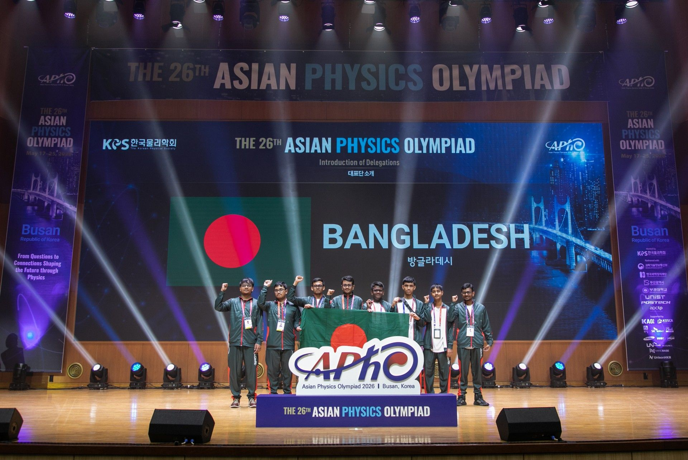

Education
Where I studied.
- 2024–26Notre Dame CollegeHigher Secondary Certificate, Science. GPA 5.00/5.00. Ranked 168th of 2,130 students on the final college transcript.
- 2015–23Ideal School and College, MotijheelSecondary School Certificate, Science. GPA 5.00/5.00. In the class 10 finals I was 1st in class and 7th of about 1,000 boys.
-
Mar 2026 – present
Co-founder
A free physics learning platform with a resource library and an AI tutor. I planned the design of every page and run its social media.
-
Jan 2026 – Nov 2026
Executive of Academics
Notre Dame Math Club
I volunteered with the club from February 2025. I helped organize the 6th NDC National Math Festival in May 2026, with about 3,500 students from 51 districts, and wrote two of its physics problems.
-
Dec 2025 – present
Co-editor, The Set
Notre Dame Math Club (one of four student editors)
I translate and edit the articles and write the editorials.
-
Dec 2025 – Jan 2026
Mechanics Instructor, Mastery Bootcamp for BdPhO 2026
Notre Dame Math Club, online
I taught 5 of the 17 classes to about 450 students.
-
Nov 2025
Physics Problem Setter and Examiner
Innoverse Bangladesh 2025, BUET, Dhaka
I wrote 3 of the 9 physics problems. With two other examiners I checked nearly 2,500 scripts in one day.
Honors and awards
Competitions I have taken part in.

- 2025Asian Physics Olympiad, Honorable MentionDhahran, Saudi Arabia. I scored 8.2/10 on the problem about the precession of the equinoxes, the highest single-problem score on Bangladesh's team that year.
- 2026Asian Physics Olympiad, Bangladesh teamBusan, South Korea. One of eight students on the team.
- 2025Bangladesh Physics Olympiad34th in Category C in the national round.
- 2022
2023Bangladesh Junior Science Olympiad, Second Runner-UpNational round, secondary category, both years. - 2023Bangladesh Biology Olympiad, Second Runner-UpDhaka regional round.
- 2024Queen's Commonwealth Essay Competition, BronzeOut of 34,939 entries.
- 2024
2025Physics Brawl Online95th in Category B in 2024 and 132nd in Category A in 2025.
Resume
Want the full picture in two pages? It lists my competitions, projects, teaching and leadership, with dates and numbers.